篇首导读
这篇长文是 2023 年智能体领域最广为流传的“地图”之一。它把 LLM 驱动的自主智能体拆成三个组件：规划（Planning）、记忆（Memory）、工具使用（Tool Use），然后逐一介绍代表性方法：思维链、思维树、ReAct、Reflexion、CoH、算法蒸馏、记忆类型与 MIPS/ANN 检索、MRKL、Toolformer、HuggingGPT、API-Bank，最后用 ChemCrow 和生成式智能体做案例，并总结三大局限。
它更像一篇“带注释的综述”，信息密度高、引用多。读的时候不必记住每个系统名，抓住三件事：智能体 = LLM 大脑 + 规划 + 记忆 + 工具；每个组件解决什么问题；这些方法各自的代价和局限。
怎么读：第一遍读“智能体系统概览”和“挑战”两节，建立框架；第二遍按兴趣深入规划、记忆、工具三节。术语卡里的词会在后面几周反复出现，建议先混个脸熟。文中的提示词和代码块保留英文原样——翻译它们反而会破坏其可执行性。英文原文折叠块为节选，完整原文请点顶部“原文”链接。
术语卡
完整术语表 →- Agent System 智能体系统
- 以 LLM 为大脑，辅以规划、记忆、工具使用等组件的系统。LLM 负责理解与决策，其他组件负责扩展它的能力边界。
- CoT / ToT 思维链 / 思维树
- CoT 让模型写出中间推理步骤；ToT 在每一步生成多个想法，形成树状结构并搜索。两者都是任务分解与推理增强技术。
- ReAct 推理与行动交替
- Thought → Action → Observation 循环。让模型在推理的同时调用工具、观察结果，再继续推理。
- Reflexion 反思
- 用语言形式的自我批评总结失败原因，加入工作记忆，指导下一轮尝试。不是梯度更新，而是“语言强化学习”。
- MIPS / ANN 最大内积搜索 / 近似最近邻
- 向量检索的核心问题与加速方法。ANN 用少量精度损失换取大规模检索的速度。
- MRKL 模块化推理、知识与语言
- LLM 作为路由器，把请求分发给最合适的专家模块（神经网络或符号工具）。
- Toolformer / TALM 工具增强语言模型
- 通过微调让 LM 学会在合适的位置调用外部工具 API，并用“调用是否提升输出质量”来扩展训练数据。
- Generative Agents 生成式智能体
- 25 个 LLM 驱动的虚拟角色在沙盒中生活，具备记忆流、检索、反思、规划与反应机制，涌现出社会行为。
以 LLM 为核心控制器来构建智能体是一个很酷的概念。AutoGPT、GPT-Engineer 和 BabyAGI 等概念验证 demo 是鼓舞人心的例子。LLM 的潜力不止于生成写得好的文案、故事、文章和程序；它可以被框定为一个强大的通用问题求解器。
智能体系统概览
在由 LLM 驱动的自主智能体系统中，LLM 充当智能体的大脑，并辅以几个关键组件：
- 规划
- 子目标与分解：智能体把大任务拆成更小、可管理的子目标，从而高效处理复杂任务。
- 反思与改进：智能体可以对过去的行动进行自我批评和自我反思，从错误中学习，并在后续步骤中改进，从而提升最终结果的质量。
- 记忆
- 短期记忆：我把所有上下文内学习都视为利用模型的短期记忆来学习。
- 长期记忆：这为智能体提供了在较长时间内保留和回忆（无限）信息的能力，通常借助外部向量存储和快速检索。
- 工具使用
- 智能体学会调用外部 API，以获取模型权重中缺失的额外信息（这些信息在预训练后往往很难改变），包括当前信息、代码执行能力、对专有信息源的访问等。
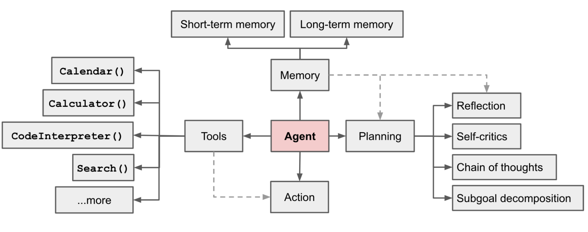
查看本节英文原文（节选）
Building agents with LLM (large language model) as its core controller is a cool concept. Several proof-of-concepts demos, such as AutoGPT, GPT-Engineer and BabyAGI, serve as inspiring examples. The potentiality of LLM extends beyond generating well-written copies, stories, essays and programs; it can be framed as a powerful general problem solver.
In a LLM-powered autonomous agent system, LLM functions as the agent’s brain, complemented by several key components: planning, memory, and tool use. Planning covers subgoal and decomposition, reflection and refinement. Memory covers short-term memory (in-context learning) and long-term memory (external vector store with fast retrieval). Tool use lets the agent call external APIs for information missing from the model weights, including current information, code execution capability, access to proprietary information sources and more.
组件一：规划
复杂任务通常涉及许多步骤。智能体需要知道这些步骤是什么，并提前规划。
任务分解
思维链（CoT；Wei et al. 2022）已成为提升模型在复杂任务上表现的标准提示技术。模型被指示“一步一步地思考”，以利用更多测试时计算，把困难任务分解成更小、更简单的步骤。CoT 把大任务变成多个可管理的任务，也让我们得以一窥模型的思考过程。
思维树（Yao et al. 2023）扩展了 CoT：在每一步探索多种推理可能性。它先把问题分解成多个思考步骤，并为每一步生成多个想法，形成树状结构。搜索过程可以是 BFS（广度优先搜索）或 DFS（深度优先搜索），每个状态由分类器（通过提示）或多数投票评估。
任务分解可以通过三种方式完成：(1) LLM 加简单提示，如 "Steps for XYZ.\n1."、"What are the subgoals for achieving XYZ?"；(2) 使用任务专用指令，例如写小说时用 "Write a story outline."；(3) 由人类输入。
另一种相当不同的方法 LLM+P（Liu et al. 2023）依赖外部经典规划器做长程规划。它用规划领域定义语言（PDDL）作为描述规划问题的中间接口。流程是：LLM (1) 把问题翻译成“Problem PDDL”，然后 (2) 请求经典规划器基于已有的“Domain PDDL”生成 PDDL 计划，最后 (3) 把 PDDL 计划翻译回自然语言。本质上，规划步骤被外包给外部工具，前提是已有领域专用的 PDDL 和合适的规划器——这在某些机器人场景中很常见，但在许多其他领域并不具备。
查看本节英文原文（节选）
A complicated task usually involves many steps. An agent needs to know what they are and plan ahead.
Chain of thought (CoT; Wei et al. 2022) has become a standard prompting technique for enhancing model performance on complex tasks. The model is instructed to “think step by step” to utilize more test-time computation to decompose hard tasks into smaller and simpler steps. CoT transforms big tasks into multiple manageable tasks and shed lights into an interpretation of the model’s thinking process.
Tree of Thoughts (Yao et al. 2023) extends CoT by exploring multiple reasoning possibilities at each step. It first decomposes the problem into multiple thought steps and generates multiple thoughts per step, creating a tree structure. The search process can be BFS (breadth-first search) or DFS (depth-first search) with each state evaluated by a classifier (via a prompt) or majority vote.
Task decomposition can be done (1) by LLM with simple prompting like "Steps for XYZ.\n1.", "What are the subgoals for achieving XYZ?", (2) by using task-specific instructions; e.g. "Write a story outline." for writing a novel, or (3) with human inputs.
Another quite distinct approach, LLM+P (Liu et al. 2023), involves relying on an external classical planner to do long-horizon planning. This approach utilizes the Planning Domain Definition Language (PDDL) as an intermediate interface to describe the planning problem. In this process, LLM (1) translates the problem into “Problem PDDL”, then (2) requests a classical planner to generate a PDDL plan based on an existing “Domain PDDL”, and finally (3) translates the PDDL plan back into natural language. Essentially, the planning step is outsourced to an external tool, assuming the availability of domain-specific PDDL and a suitable planner which is common in certain robotic setups but not in many other domains.
自我反思
自我反思是自主智能体迭代改进的关键：通过修正过去的行动决策、纠正之前的错误来提升。在试错不可避免的真实任务中，它至关重要。
ReAct（Yao et al. 2023）把推理和行动整合进 LLM：动作空间扩展为“任务专用的离散动作 + 语言空间”的组合。前者让 LLM 能与环境交互（例如使用 Wikipedia 搜索 API），后者让 LLM 用自然语言生成推理轨迹。
ReAct 提示模板包含让 LLM 思考的显式步骤，大致格式为：
Thought: ...
Action: ...
Observation: ...
... (Repeated many times)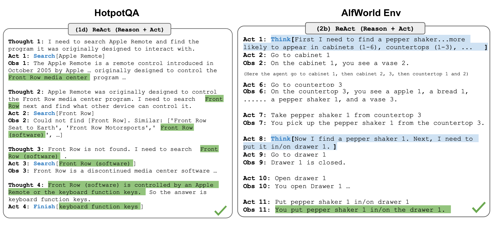
在知识密集型任务和决策任务的实验中，ReAct 都优于去掉 Thought: 步骤的纯 Act 基线。
Reflexion（Shinn & Labash 2023）是一个让智能体具备动态记忆和自我反思能力、从而提升推理技能的框架。Reflexion 采用标准强化学习设置：奖励模型给出简单的二元奖励；动作空间沿用 ReAct 的设置，任务专用动作空间用语言增强，以支持复杂推理步骤。每个动作 at 之后，智能体计算一个启发式指标 ht，并可根据自我反思结果，选择是否重置环境、开始新一轮尝试。
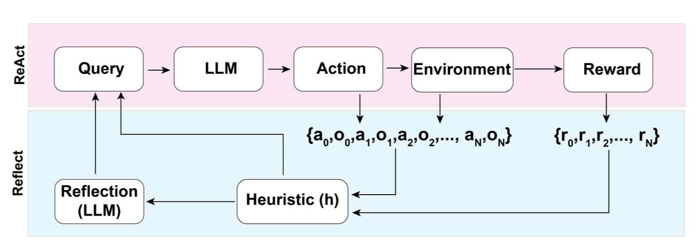
启发式函数决定轨迹何时低效或包含幻觉、应当停止。低效规划指轨迹耗时过长却没有成功。幻觉定义为在环境中遇到一连串相同的动作，导致相同的观察结果。
自我反思通过向 LLM 展示两个示例来产生，每个示例是一对（失败轨迹，用于指导未来计划改变的理想反思）。然后反思被加入智能体的工作记忆，最多三条，作为查询 LLM 的上下文。
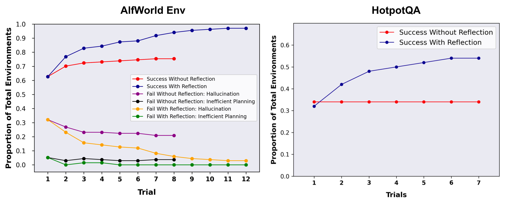
Chain of Hindsight（CoH；Liu et al. 2023）鼓励模型改进自己的输出：它把一系列过去的输出显式呈现给模型，每个输出都带有反馈标注。人类反馈数据是一组 Dh = {(x, yi, ri, zi)}i=1n，其中 x 是提示，每个 yi 是模型补全，ri 是 yi 的人类评分，zi 是对应的人类提供的事后反馈（hindsight feedback）。假设反馈元组按奖励排序：rn ≥ rn−1 ≥ … ≥ r1。过程是监督微调，数据是形如 τh = (x, zi, yi, zj, yj, …, zn, yn) 的序列，其中 1 ≤ i ≤ j ≤ n。模型被微调为只预测 yn（以序列前缀为条件），这样模型就能基于反馈序列自我反思、产生更好的输出。测试时，模型还可以选择接受多轮人类标注者的指令。
为避免过拟合，CoH 加入一个正则项，最大化预训练数据集的对数似然。为避免走捷径和复制（因为反馈序列里有很多常见词），他们在训练时随机掩蔽 0%–5% 的过去 token。
他们实验中的训练数据集由 WebGPT 比较数据、人类反馈摘要数据和人类偏好数据集组合而成。
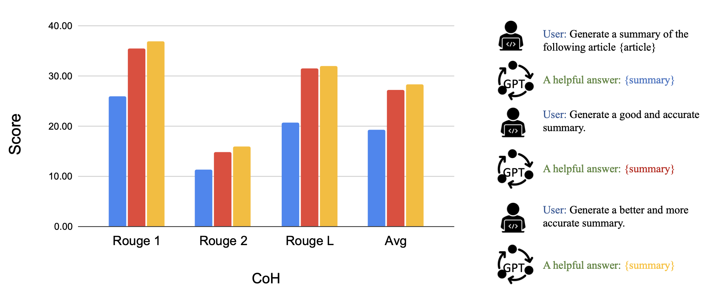
CoH 的思路是在上下文中呈现一系列逐步改进的输出历史，训练模型顺应这种趋势、产生更好的输出。算法蒸馏（AD；Laskin et al. 2023）把同样的思路应用到强化学习任务的跨回合轨迹中：一个“算法”被封装在长历史条件策略里。考虑到智能体多次与环境交互、每个回合都略有进步，AD 把这段学习历史拼接起来喂给模型。因此，我们期望下一个预测动作比之前的尝试表现更好。目标是学习 RL 的过程，而不是训练一个任务专用策略本身。
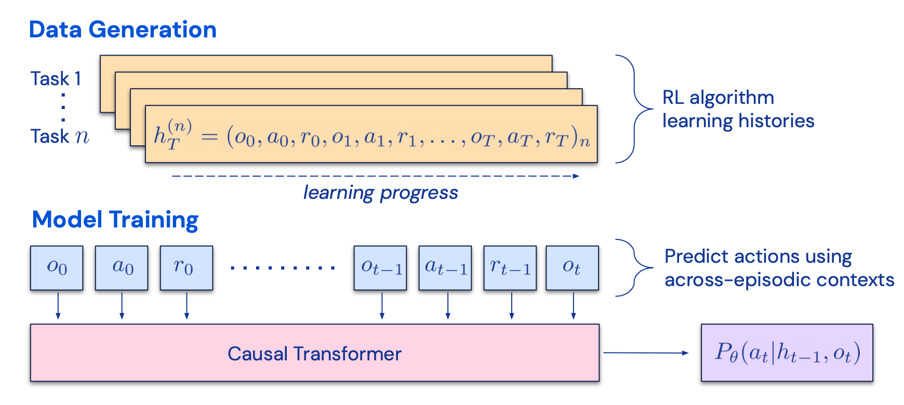
论文假设：任何能生成一组学习历史的算法，都可以通过对动作做行为克隆蒸馏进神经网络。历史数据由一组源策略生成，每个源策略针对特定任务训练。训练阶段，每次 RL 运行采样一个随机任务，并使用多回合历史的子序列训练，使学到的策略与任务无关。
现实中模型的上下文窗口有限，因此回合要足够短，才能构造多回合历史。要学到接近最优的上下文内 RL 算法，需要 2–4 个回合的多回合上下文。上下文内 RL 的出现需要足够长的上下文。
与三个基线相比——ED（专家蒸馏，用专家轨迹而非学习历史做行为克隆）、源策略（用 UCB 生成蒸馏轨迹）、RL2（Duan et al. 2017；作为上界，因为它需要在线 RL）——AD 展示了上下文内 RL，性能接近 RL2，尽管只用了离线 RL，而且比其他基线学得快得多。当以源策略的部分训练历史为条件时，AD 也比 ED 基线提升得快得多。
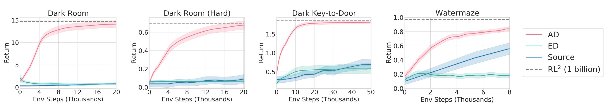
查看本节英文原文（节选）
Self-reflection is a vital aspect that allows autonomous agents to improve iteratively by refining past action decisions and correcting previous mistakes. It plays a crucial role in real-world tasks where trial and error are inevitable.
ReAct (Yao et al. 2023) integrates reasoning and acting within LLM by extending the action space to be a combination of task-specific discrete actions and the language space. The former enables LLM to interact with the environment (e.g. use Wikipedia search API), while the latter prompting LLM to generate reasoning traces in natural language.
Reflexion (Shinn & Labash 2023) is a framework to equip agents with dynamic memory and self-reflection capabilities to improve reasoning skills. Reflexion has a standard RL setup, in which the reward model provides a simple binary reward and the action space follows the setup in ReAct where the task-specific action space is augmented with language to enable complex reasoning steps. After each action at, the agent computes a heuristic ht and optionally may decide to reset the environment to start a new trial depending on the self-reflection results.
Chain of Hindsight (CoH; Liu et al. 2023) encourages the model to improve on its own outputs by explicitly presenting it with a sequence of past outputs, each annotated with feedback. Algorithm Distillation (AD; Laskin et al. 2023) applies the same idea to cross-episode trajectories in reinforcement learning tasks, where an algorithm is encapsulated in a long history-conditioned policy.
组件二：记忆
（感谢 ChatGPT 帮我起草这一节。我在与 ChatGPT 的对话中学到了很多关于人脑和快速 MIPS 数据结构的知识。）
记忆类型
记忆可以定义为获取、存储、保留和之后检索信息的过程。人脑中有几种记忆类型。
- 感觉记忆：最早期的记忆阶段，在原始刺激结束后仍能保留感官信息（视觉、听觉等）的印象。感觉记忆通常只持续几秒钟。子类包括图像记忆（视觉）、回声记忆（听觉）和触觉记忆。
- 短期记忆（STM）/ 工作记忆：存储我们当前意识到、且执行学习和推理等复杂认知任务所需的信息。短期记忆的容量据信约为 7 个项目（Miller 1956），持续 20–30 秒。
- 长期记忆（LTM）：可以存储非常长时间的信息，从几天到几十年，容量基本无限。LTM 有两个子类型：
- 显式/陈述性记忆：关于事实和事件的记忆，可以被有意识地回忆，包括情景记忆（事件和经历）和语义记忆（事实和概念）。
- 隐式/程序性记忆：无意识的记忆，涉及自动执行的技能和固定流程，比如骑车或打字。
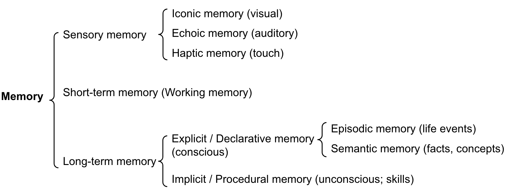
我们可以粗略地做如下映射：
- 感觉记忆 → 为原始输入（文本、图像或其他模态）学习嵌入表示；
- 短期记忆 → 上下文内学习。它短暂且有限，受 Transformer 有限上下文窗口的限制；
- 长期记忆 → 智能体在查询时可以访问的外部向量存储，通过快速检索访问。
最大内积搜索（MIPS）
外部记忆可以缓解有限注意力跨度的限制。标准做法是把信息的嵌入表示保存到支持快速最大内积搜索（MIPS）的向量存储数据库中。为了优化检索速度，常见选择是近似最近邻（ANN）算法，返回近似的 top-k 最近邻，用少量精度损失换取巨大加速。
几种常见的 ANN 算法：
- LSH（局部敏感哈希）：引入哈希函数，使相似的输入项以高概率映射到同一个桶，桶的数量远小于输入数量。
- ANNOY（Approximate Nearest Neighbors Oh Yeah）：核心数据结构是随机投影树，一组二叉树，每个非叶节点表示一个超平面，把输入空间一分为二，每个叶节点存储一个数据点。树独立随机构建，某种程度上类似哈希函数。ANNOY 在所有树中搜索，迭代地进入离查询更近的那一半，然后聚合结果。思路与 KD 树相关，但可扩展性高得多。
- HNSW（分层可导航小世界）：受小世界网络启发——大多数节点可以在少数几步内到达任何其他节点，例如社交网络的“六度分隔”。HNSW 构建这些小世界图的层次结构，底层包含实际数据点，中间层创建快捷方式以加速搜索。搜索时从顶层随机节点出发，向目标导航；当无法更近时，下移到下一层，直到到达底层。上层的每次移动可能覆盖数据空间中的长距离，下层的每次移动则细化搜索质量。
- FAISS（Facebook AI Similarity Search）：假设在高维空间中节点间距离服从高斯分布，因此数据点应该存在聚类。FAISS 应用向量量化：把向量空间划分成簇，然后在簇内细化量化。搜索时先用粗量化找候选簇，再用细量化深入每个簇。
- ScaNN（Scalable Nearest Neighbors）：主要创新是各向异性向量量化。它把数据点 xi 量化为 x̃i，使内积 ⟨q, xi⟩ 尽可能接近原始距离 ∠q, x̃i，而不是只挑最近的量化质心。
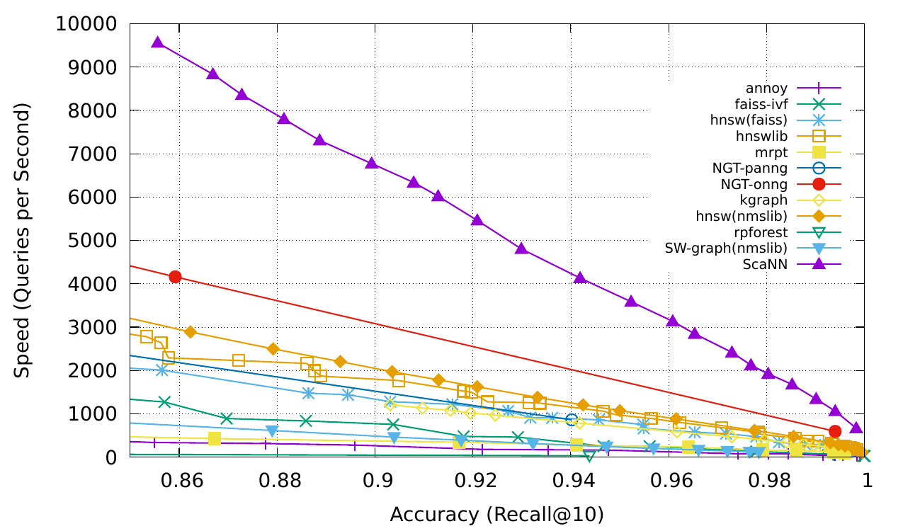
更多 MIPS 算法和性能比较见 ann-benchmarks.com。
查看本节英文原文（节选）
Memory can be defined as the processes used to acquire, store, retain, and later retrieve information. There are several types of memory in human brains: sensory memory, short-term memory (STM) or working memory, and long-term memory (LTM), with explicit/declarative and implicit/procedural subtypes.
We can roughly consider the following mappings: sensory memory as learning embedding representations for raw inputs; short-term memory as in-context learning; long-term memory as the external vector store that the agent can attend to at query time, accessible via fast retrieval.
The external memory can alleviate the restriction of finite attention span. A standard practice is to save the embedding representation of information into a vector store database that can support fast maximum inner-product search (MIPS). To optimize the retrieval speed, the common choice is the approximate nearest neighbors (ANN) algorithm to return approximately top k nearest neighbors to trade off a little accuracy lost for a huge speedup.
Common choices include LSH, ANNOY, HNSW, FAISS, and ScaNN.
组件三：工具使用
工具使用是人类显著而独特的特征。我们创造、修改和使用外部物体，做超越身体和认知极限的事。为 LLM 配备外部工具可以显著扩展模型能力。
MRKL（Karpas et al. 2022）是“Modular Reasoning, Knowledge and Language”的缩写，是一种面向自主智能体的神经-符号架构。MRKL 系统包含一组“专家”模块，通用 LLM 作为路由器，把查询路由到最合适的专家模块。这些模块可以是神经的（如深度学习模型）或符号的（如数学计算器、货币转换器、天气 API）。
他们做了一个微调 LLM 调用计算器的实验，以算术为测试用例。实验表明，文字数学题比显式陈述的数学题更难，因为 LLM（7B Jurassic1-large 模型）无法可靠地为基本算术提取正确的参数。结果凸显：当外部符号工具可以可靠工作时，知道何时以及如何使用工具至关重要，而这取决于 LLM 的能力。
TALM（Tool Augmented Language Models；Parisi et al. 2022）和 Toolformer（Schick et al. 2023）都微调 LM 来学习使用外部工具 API。数据集根据“新加入的 API 调用标注能否提升模型输出质量”来扩展。更多细节见 Prompt Engineering 的“External APIs”一节。
ChatGPT Plugins 和 OpenAI API function calling 是 LLM 增强工具使用能力在实践中的好例子。工具 API 集合可以由其他开发者提供（如 Plugins），也可以自定义（如 function calls）。
HuggingGPT（Shen et al. 2023）是一个框架：用 ChatGPT 作为任务规划器，根据模型描述选择 HuggingFace 平台上可用的模型，并根据执行结果汇总响应。
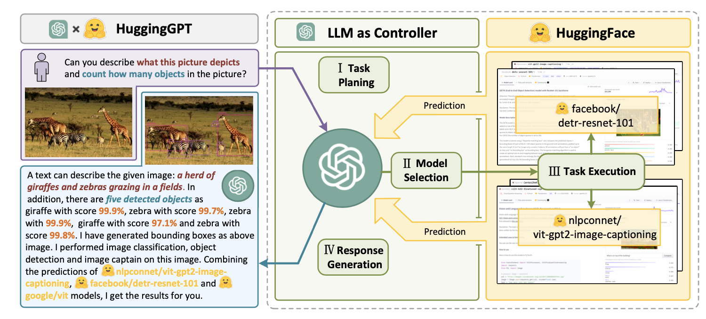
系统包含 4 个阶段：
(1) 任务规划：LLM 作为大脑，把用户请求解析成多个任务。每个任务有四个属性：任务类型、ID、依赖和参数。他们用少样本示例引导 LLM 做任务解析和规划。
(2) 模型选择：LLM 把任务分配给专家模型，请求被表述为多项选择题。LLM 看到一组模型可选。由于上下文长度有限，需要按任务类型过滤。
(3) 任务执行：专家模型执行具体任务并记录结果。
(4) 响应生成：LLM 接收执行结果，向用户提供汇总结果。
要把 HuggingGPT 投入真实使用，还需要解决几个挑战：(1) 效率需要提升，因为 LLM 推理轮次和与其他模型的交互都会拖慢流程；(2) 依赖长上下文窗口来沟通复杂的任务内容；(3) 需要提升 LLM 输出和外部模型服务的稳定性。
API-Bank（Li et al. 2023）是一个评估工具增强 LLM 性能的基准。它包含 53 个常用 API 工具、一个完整的工具增强 LLM 工作流，以及 264 段涉及 568 次 API 调用的标注对话。API 选择非常多样，包括搜索引擎、计算器、日历查询、智能家居控制、日程管理、健康数据管理、账户认证流程等。由于 API 数量很大，LLM 先访问 API 搜索引擎找到要调用的正确 API，再使用相应文档发起调用。
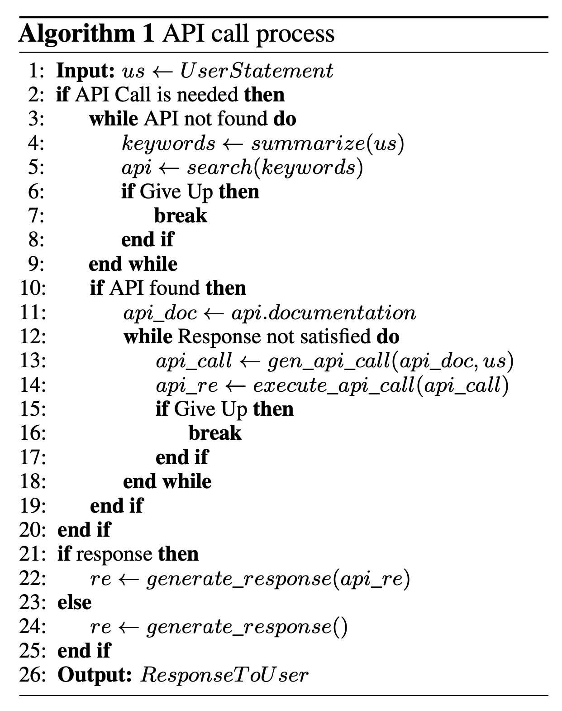
在 API-Bank 工作流中，LLM 需要做几个决策，每一步都可以评估决策的准确度。决策包括：
- 是否需要调用 API。
- 识别要调用的正确 API：如果不够好，LLM 需要迭代修改 API 输入（例如为搜索引擎 API 决定搜索关键词）。
- 基于 API 结果响应：如果结果不满意，模型可以选择改进并再次调用。
这个基准从三个层级评估智能体的工具使用能力：
- Level-1 评估调用 API的能力。给定 API 描述，模型需要判断是否调用给定 API、正确调用，并正确响应 API 返回。
- Level-2 考察检索 API的能力。模型需要搜索可能解决用户需求的 API，并通过阅读文档学会使用它们。
- Level-3 评估超越检索和调用、规划 API的能力。给定不明确的用户请求（例如安排小组会议、为旅行预订航班/酒店/餐厅），模型可能需要多次 API 调用才能解决。
查看本节英文原文（节选）
Tool use is a remarkable and distinguishing characteristic of human beings. We create, modify and utilize external objects to do things that go beyond our physical and cognitive limits. Equipping LLMs with external tools can significantly extend the model capabilities.
MRKL (Karpas et al. 2022), short for “Modular Reasoning, Knowledge and Language”, is a neuro-symbolic architecture for autonomous agents. A MRKL system is proposed to contain a collection of “expert” modules and the general-purpose LLM works as a router to route inquiries to the best suitable expert module. These modules can be neural or symbolic.
Both TALM and Toolformer fine-tune a LM to learn to use external tool APIs. The dataset is expanded based on whether a newly added API call annotation can improve the quality of model outputs.
HuggingGPT is a framework to use ChatGPT as the task planner to select models available in HuggingFace platform according to the model descriptions and summarize the response based on the execution results. API-Bank is a benchmark for evaluating the performance of tool-augmented LLMs, with 53 API tools, a complete workflow, and 264 annotated dialogues involving 568 API calls.
案例研究
科学发现智能体
ChemCrow（Bran et al. 2023）是一个领域专用例子：LLM 配备 13 个专家设计的工具，完成有机合成、药物发现和材料设计等任务。工作流用 LangChain 实现，体现了前面 ReAct 和 MRKL 的描述，把 CoT 推理与任务相关工具结合起来：
- 向 LLM 提供工具名称列表、用途描述，以及预期输入/输出的细节。
- 然后指示它在必要时使用提供的工具回答用户提示。指令建议模型遵循 ReAct 格式——
Thought, Action, Action Input, Observation。
一个有趣的观察是：基于 LLM 的评估认为 GPT-4 和 ChemCrow 表现几乎相当，但由专家进行的人类评估——关注解决方案的完成度和化学正确性——显示 ChemCrow 大幅优于 GPT-4。这表明，在需要深厚专业知识的领域用 LLM 评估自身表现存在潜在问题。缺乏专业知识可能让 LLM 不知道自己的缺陷，因而无法很好地判断任务结果的正确性。
Boiko et al. (2023) 也研究了用于科学发现的 LLM 增强智能体，处理复杂科学实验的自主设计、规划和执行。这个智能体可以用工具浏览互联网、阅读文档、执行代码、调用机器人实验 API，以及利用其他 LLM。
例如，当被要求“开发一种新的抗癌药物”时，模型给出了以下推理步骤：
- 询问当前抗癌药物发现的趋势；
- 选择一个靶点；
- 请求针对这些化合物的支架；
- 确定化合物后，模型尝试合成它。
他们还讨论了风险，尤其是非法药物和生物武器。他们构建了一个包含已知化学战剂列表的测试集，要求智能体合成它们。11 个请求中有 4 个（36%）被接受并获得了合成方案，智能体尝试查阅文档执行流程。11 个中有 7 个被拒绝，其中 5 个发生在网页搜索之后，2 个仅基于提示就被拒绝。
生成式智能体模拟
生成式智能体（Park et al. 2023）是一个超级有趣的实验：25 个虚拟角色，每个由 LLM 驱动的智能体控制，在受《模拟人生》启发的沙盒环境中生活和互动。生成式智能体为交互式应用创造了可信的人类行为模拟。
生成式智能体的设计把 LLM 与记忆、规划和反思机制结合，使智能体能够基于过去经验行动，并与其他智能体互动。
- 记忆流：一个长期记忆模块（外部数据库），用自然语言记录智能体经历的完整列表。每个元素是一个观察，即智能体直接获得的事件。智能体间通信可以触发新的自然语言陈述。
- 检索模型：根据相关性、新近性和重要性，浮出用于指导智能体行为的上下文。
- 新近性：近期事件得分更高；
- 重要性：区分日常记忆与核心记忆，直接问 LM；
- 相关性：基于与当前情境/查询的关联程度。
- 反思机制：随着时间推移把记忆综合成更高层的推断，指导智能体未来行为。它们是对过去事件的更高层总结（注意，这与上面的自我反思略有不同）。用最近的 100 条观察提示 LM，让它针对一组观察/陈述生成 3 个最显著的高层问题，然后让 LM 回答这些问题。
- 规划与反应：把反思和环境信息转化为行动。规划本质上是为了优化当下与未来的可信度。提示模板：
{Intro of an agent X}. Here is X's plan today in broad strokes: 1)。智能体之间的关系，以及一个智能体对另一个智能体的观察，都会被纳入规划和反应。环境信息以树结构呈现。
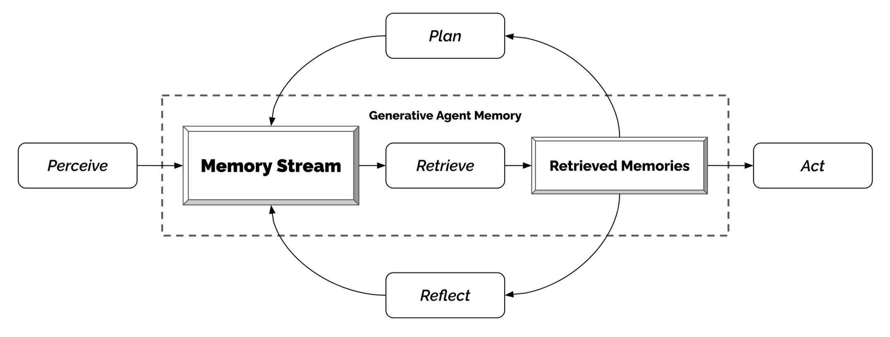
这个有趣的模拟产生了涌现的社会行为，例如信息扩散、关系记忆（例如两个智能体继续对话主题）和社会事件协调（例如举办派对并邀请许多人）。
概念验证示例
AutoGPT 吸引了很多关注：用 LLM 作为主控制器搭建自主智能体的可能性。由于自然语言接口，它有很多可靠性问题，但仍是一个很酷的概念验证 demo。AutoGPT 的大量代码都在做格式解析。
下面是 AutoGPT 使用的系统消息，其中 {{...}} 是用户输入。提示词保留英文原样；你可以把它当作“智能体系统提示长什么样”的样本：
展开 AutoGPT 系统消息（英文原文）
You are {{ai-name}}, {{user-provided AI bot description}}.
Your decisions must always be made independently without seeking user assistance. Play to your strengths as an LLM and pursue simple strategies with no legal complications.
GOALS:
1. {{user-provided goal 1}}
2. {{user-provided goal 2}}
3. ...
4. ...
5. ...
Constraints:
1. ~4000 word limit for short term memory. Your short term memory is short, so immediately save important information to files.
2. If you are unsure how you previously did something or want to recall past events, thinking about similar events will help you remember.
3. No user assistance
4. Exclusively use the commands listed in double quotes e.g. "command name"
5. Use subprocesses for commands that will not terminate within a few minutes
Commands:
1. Google Search: "google", args: "input": "<search>"
2. Browse Website: "browse_website", args: "url": "<url>", "question": "<what_you_want_to_find_on_website>"
3. Start GPT Agent: "start_agent", args: "name": "<name>", "task": "<short_task_desc>", "prompt": "<prompt>"
4. Message GPT Agent: "message_agent", args: "key": "<key>", "message": "<message>"
5. List GPT Agents: "list_agents", args:
6. Delete GPT Agent: "delete_agent", args: "key": "<key>"
7. Clone Repository: "clone_repository", args: "repository_url": "<url>", "clone_path": "<directory>"
8. Write to file: "write_to_file", args: "file": "<file>", "text": "<text>"
9. Read file: "read_file", args: "file": "<file>"
10. Append to file: "append_to_file", args: "file": "<file>", "text": "<text>"
11. Delete file: "delete_file", args: "file": "<file>"
12. Search Files: "search_files", args: "directory": "<directory>"
13. Analyze Code: "analyze_code", args: "code": "<full_code_string>"
14. Get Improved Code: "improve_code", args: "suggestions": "<list_of_suggestions>", "code": "<full_code_string>"
15. Write Tests: "write_tests", args: "code": "<full_code_string>", "focus": "<list_of_focus_areas>"
16. Execute Python File: "execute_python_file", args: "file": "<file>"
17. Generate Image: "generate_image", args: "prompt": "<prompt>"
18. Send Tweet: "send_tweet", args: "text": "<text>"
19. Do Nothing: "do_nothing", args:
20. Task Complete (Shutdown): "task_complete", args: "reason": "<reason>"
Resources:
1. Internet access for searches and information gathering.
2. Long Term memory management.
3. GPT-3.5 powered Agents for delegation of simple tasks.
4. File output.
Performance Evaluation:
1. Continuously review and analyze your actions to ensure you are performing to the best of your abilities.
2. Constructively self-criticize your big-picture behavior constantly.
3. Reflect on past decisions and strategies to refine your approach.
4. Every command has a cost, so be smart and efficient. Aim to complete tasks in the least number of steps.
You should only respond in JSON format as described below
Response Format:
{
"thoughts": {
"text": "thought",
"reasoning": "reasoning",
"plan": "- short bulleted\n- list that conveys\n- long-term plan",
"criticism": "constructive self-criticism",
"speak": "thoughts summary to say to user"
},
"command": {
"name": "command name",
"args": {
"arg name": "value"
}
}
}
Ensure the response can be parsed by Python json.loadsGPT-Engineer 是另一个项目：给定自然语言任务，生成整个代码仓库。GPT-Engineer 被指示先思考要构建的较小组件列表，并在需要时询问用户以澄清问题。
下面是 GPT-Engineer 发给 OpenAI ChatCompletion 端点的任务澄清对话示例。用户输入包裹在 {{user input text}} 中：
展开 GPT-Engineer 任务澄清对话（英文原文）
[
{
"role": "system",
"content": "You will read instructions and not carry them out, only seek to clarify them.\nSpecifically you will first summarise a list of super short bullets of areas that need clarification.\nThen you will pick one clarifying question, and wait for an answer from the user.\n"
},
{
"role": "user",
"content": "We are writing {{a Super Mario game in python. MVC components split in separate files. Keyboard control.}}\n"
},
{
"role": "assistant",
"content": "Summary of areas that need clarification:\n1. Specifics of the Super Mario game (e.g. level design, characters, gameplay mechanics)\n2. Details about the MVC components (e.g. which components are in each file)\n3. Keyboard control implementation (e.g. which keys to use, how to handle input)\n\nClarifying question:\nCan you provide more details about the Super Mario game, such as level design, characters, and gameplay mechanics?"
},
{
"role": "user",
"content": "{{There are 10 levels in total. The main character is a plumber named Mario, who can walk and jump. It is a classical platform game just like Super Mario. The main character moves from left to right, trying to get to the destination, where there are many obstacles and attacks from enemies in the process.}}\n\nIs anything else unclear? If yes, only answer in the form:\n{remaining unclear areas} remaining questions.\n{Next question}\nIf everything is sufficiently clear, only answer \"Nothing more to clarify.\"."
},
{
"role": "assistant",
"content": "Remaining unclear areas: 2 remaining questions.\nCan you provide more information about how the MVC components are split into separate files?"
},
{
"role": "user",
"content": "{{Make your own assumptions and state them explicitly before starting}}"
}
]澄清之后，智能体进入代码编写模式，使用不同的系统消息。核心要求是：先列出核心类、函数、方法及其用途，然后输出每个文件的完整代码，严格遵循 Markdown 代码块格式，确保代码可运行、没有占位符，并包含依赖定义文件。
展开 GPT-Engineer 代码编写系统消息（英文原文）
Think step by step and reason yourself to the right decisions to make sure we get it right.
You will first lay out the names of the core classes, functions, methods that will be necessary, as well as a quick comment on their purpose.
Then you will output the content of each file including ALL code.
Each file must strictly follow a markdown code block format, where the following tokens must be replaced such that
FILENAME is the lowercase file name including the file extension,
LANG is the markup code block language for the code's language, and CODE is the code:
FILENAME
```
CODE
```
You will start with the "entrypoint" file, then go to the ones that are imported by that file, and so on.
Please note that the code should be fully functional. No placeholders.
Follow a language and framework appropriate best practice file naming convention.
Make sure that files contain all imports, types etc. Make sure that code in different files are compatible with each other.
Ensure to implement all code, if you are unsure, write a plausible implementation.
Include module dependency or package manager dependency definition file.
Before you finish, double check that all parts of the architecture is present in the files.
Useful to know:
You almost always put different classes in different files.
For Python, you always create an appropriate requirements.txt file.
For NodeJS, you always create an appropriate package.json file.
You always add a comment briefly describing the purpose of the function definition.
You try to add comments explaining very complex bits of logic.
You always follow the best practices for the requested languages in terms of describing the code written as a defined
package/project.
Python toolbelt preferences:
- pytest
- dataclasses查看本节英文原文（节选）
ChemCrow is a domain-specific example in which LLM is augmented with 13 expert-designed tools to accomplish tasks across organic synthesis, drug discovery, and materials design. The workflow, implemented in LangChain, reflects what was previously described in the ReAct and MRKLs and combines CoT reasoning with tools relevant to the tasks.
Generative Agents is super fun experiment where 25 virtual characters, each controlled by a LLM-powered agent, are living and interacting in a sandbox environment, inspired by The Sims. The design combines LLM with memory, planning and reflection mechanisms.
AutoGPT has drawn a lot of attention into the possibility of setting up autonomous agents with LLM as the main controller. It has quite a lot of reliability issues given the natural language interface, but nevertheless a cool proof-of-concept demo. GPT-Engineer is another project to create a whole repository of code given a task specified in natural language.
挑战
在回顾了构建以 LLM 为中心的智能体的关键思想和 demo 后，我看到几个常见局限：
- 有限上下文长度：受限的上下文容量限制了历史信息、详细指令、API 调用上下文和响应的纳入。系统设计必须在这个有限的通信带宽下工作，而自我反思等从过去错误中学习的机制，会非常受益于长或无限的上下文窗口。尽管向量存储和检索可以提供更大的知识池，但它们的表示能力不如完整注意力。
- 长期规划与任务分解的挑战：在长历史上规划、有效探索解空间仍然困难。面对意外错误时，LLM 很难调整计划，因此不如从试错中学习的人类稳健。
- 自然语言接口的可靠性：当前智能体系统依赖自然语言作为 LLM 与外部组件（如记忆和工具）之间的接口。然而，模型输出的可靠性存疑：LLM 可能犯格式错误，偶尔还会表现出“叛逆”行为（例如拒绝遵循指令）。因此，很多智能体 demo 代码都在解析模型输出。
查看本节英文原文（节选）
After going through key ideas and demos of building LLM-centered agents, I start to see a couple common limitations:
- Finite context length: The restricted context capacity limits the inclusion of historical information, detailed instructions, API call context, and responses. The design of the system has to work with this limited communication bandwidth, while mechanisms like self-reflection to learn from past mistakes would benefit a lot from long or infinite context windows. Although vector stores and retrieval can provide access to a larger knowledge pool, their representation power is not as powerful as full attention.
- Challenges in long-term planning and task decomposition: Planning over a lengthy history and effectively exploring the solution space remain challenging. LLMs struggle to adjust plans when faced with unexpected errors, making them less robust compared to humans who learn from trial and error.
- Reliability of natural language interface: Current agent system relies on natural language as an interface between LLMs and external components such as memory and tools. However, the reliability of model outputs is questionable, as LLMs may make formatting errors and occasionally exhibit rebellious behavior (e.g. refuse to follow an instruction). Consequently, much of the agent demo code focuses on parsing model output.
引用与参考文献
引用格式：Weng, Lilian. (2023 年 6 月). “LLM-powered Autonomous Agents”. Lil’Log. https://lilianweng.github.io/posts/2023-06-23-agent/。
原文的 21 条参考文献保留了英文条目，放在下面的折叠块里，方便按图索骥：
展开参考文献列表（英文）
- Wei et al. “Chain of thought prompting elicits reasoning in large language models.” NeurIPS 2022.
- Yao et al. “Tree of Thoughts: Deliberate Problem Solving with Large Language Models.” arXiv:2305.10601 (2023).
- Liu et al. “Chain of Hindsight Aligns Language Models with Feedback.” arXiv:2302.02676 (2023).
- Liu et al. “LLM+P: Empowering Large Language Models with Optimal Planning Proficiency.” arXiv:2304.11477 (2023).
- Yao et al. “ReAct: Synergizing reasoning and acting in language models.” ICLR 2023.
- Google Blog. “Announcing ScaNN: Efficient Vector Similarity Search.” July 28, 2020.
- OpenAI ChatGPT shared conversation. https://chat.openai.com/share/46ff149e-a4c7-4dd7-a800-fc4a642ea389
- Shinn & Labash. “Reflexion: an autonomous agent with dynamic memory and self-reflection.” arXiv:2303.11366 (2023).
- Laskin et al. “In-context Reinforcement Learning with Algorithm Distillation.” ICLR 2023.
- Karpas et al. “MRKL Systems: A modular, neuro-symbolic architecture that combines large language models, external knowledge sources and discrete reasoning.” arXiv:2205.00445 (2022).
- Nakano et al. “WebGPT: Browser-assisted question-answering with human feedback.” arXiv:2112.09332 (2021).
- Parisi et al. “TALM: Tool Augmented Language Models.” arXiv:2205.12255.
- Schick et al. “Toolformer: Language Models Can Teach Themselves to Use Tools.” arXiv:2302.04761 (2023).
- Weaviate Blog. “Why is Vector Search so fast?” Sep 13, 2022.
- Li et al. “API-Bank: A Benchmark for Tool-Augmented LLMs.” arXiv:2304.08244 (2023).
- Shen et al. “HuggingGPT: Solving AI Tasks with ChatGPT and its Friends in HuggingFace.” arXiv:2303.17580 (2023).
- Bran et al. “ChemCrow: Augmenting large-language models with chemistry tools.” arXiv:2304.05376 (2023).
- Boiko et al. “Emergent autonomous scientific research capabilities of large language models.” arXiv:2304.05332 (2023).
- Park et al. “Generative Agents: Interactive Simulacra of Human Behavior.” arXiv:2304.03442 (2023).
- AutoGPT. https://github.com/Significant-Gravitas/Auto-GPT
- GPT-Engineer. https://github.com/AntonOsika/gpt-engineer
要点回顾
- 智能体的最小骨架：LLM 大脑 + 规划 + 记忆 + 工具使用。三者不是并列的“功能”，而是扩展模型能力边界的三条路径。
- 规划的核心是任务分解与自我反思；CoT、ToT、ReAct、Reflexion、CoH、AD 是这条线上的代表方法。
- 记忆分短期（上下文窗口）与长期（外部向量库）；MIPS/ANN 是长期记忆检索的工程基础。
- 工具使用让模型突破权重里的静态知识；MRKL、Toolformer、HuggingGPT、API-Bank 展示了不同的接口与评测方式。
- 三大局限：上下文有限、长期规划不稳、自然语言接口不可靠。后面课程的上下文工程、评估、脚手架设计，基本都在回应这三点。